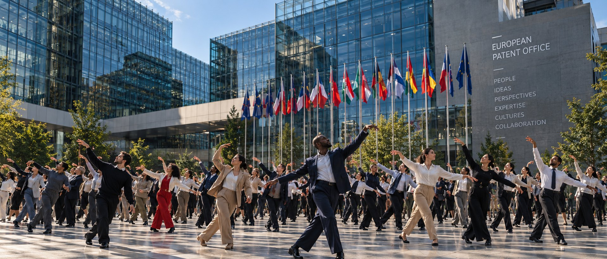
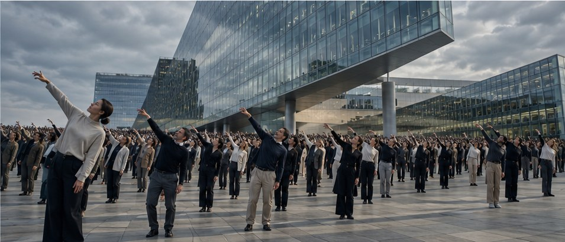

Creative
Studio
EPO 50 · Since 1977
EPO
in motion.
Moving ideas forward.

Creative
Studio
01 / The EPO
An institution
made of people.
6,300
people, almost
35
nationalities
5
locations
50
years in 2027
Munich, The Hague, Berlin, Vienna and Brussels. Source: epo.org, October 2026

Creative
Studio
02 / The insight
For 50 years, the EPO has been about movement.
Ideas move.
Knowledge moves.
Perspectives meet.
Innovation travels across borders.
We make this movement visible.

Creative
Studio
03 / The idea
We turn the EPO into one great choreography.
Performed by the people who make the organisation what it is. Movement is a language everyone understands. Across 35 nationalities, it needs no translation.

Creative
Studio
04 / The scale
6,300 people.
35 nationalities.
5 locations.
One movement.
Creative
Studio
05 / The film
One gesture
One team
One department
One building
One city
Europe
Everyone
It starts as an ordinary working day. One movement is picked up by the next person, then the next, until the whole organisation is in motion.
Creative
Studio
06 / Across Europe
One movement
across Europe.
Match cuts join the five locations into one continuous space.
Munich → The Hague
A movement begins in Munich and finishes in The Hague.
Berlin → Vienna
Someone turns in Berlin. The movement continues in Vienna.
Brussels → Munich
A hand reaches out in Brussels. Someone in Munich responds.
Creative
Studio
07 / A choreography only the EPO could perform
We don’t teach the EPO a dance.
We turn its work into movement.
A hand passes a document. Two people compare. A group gathers around an idea. A choreographer turns these real gestures into a contemporary movement language that belongs to the EPO and nobody else.
01
Examine
02
Compare
03
Connect
04
Collaborate
05
Exchange
06
Pass on
07
Move forward
Creative
Studio
08 / Hero moment one
The building moves.
In The Hague, one movement travels through the glass façade like a wave, window by window, floor by floor. For a moment the whole building seems to dance.
Creative
Studio
09 / Hero moment two
Everyone moves together.
Hundreds of colleagues in one flowing formation. The camera rises, and individuals become one collective movement. The emotional climax of the film.

Creative
Studio
10 / More than a film
The anniversary begins before the film is released.
The production becomes an internal anniversary event. One project creates two things: an external campaign and a shared experience inside the EPO.
01
Learn the movements
02
Rehearse together
03
Join workshops
04
Meet other departments
05
Become the choreography
06
Appear in the film
Creative
Studio
11 / The campaign
One film.
Hundreds of stories.
01
Hero film
02
Social cutdowns
03
Employee portraits
04
Behind the scenes
05
Rehearsal stories
06
Location films
07
Employer branding
08
Anniversary event content
Creative
Studio
12 / How we make it
Our recommendation.
Real EPO employees
Authenticity, scale and emotional credibility.
+
Professional choreographer
One movement language that makes everyone feel part of the same world.
+
Selected performers
Support for the transitions and the technically demanding passages.
AI and VFX may support individual shots. The heart of the film stays human.
Creative
Studio
EPO
in motion.
50 years of people moving ideas forward.
Together.
EPO 50 · Since 1977 · A concept by Ivory Creative Studio